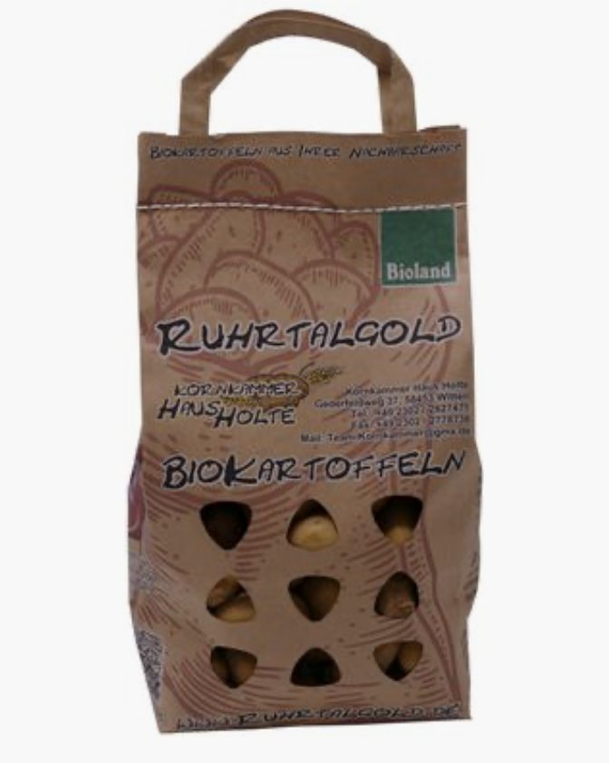
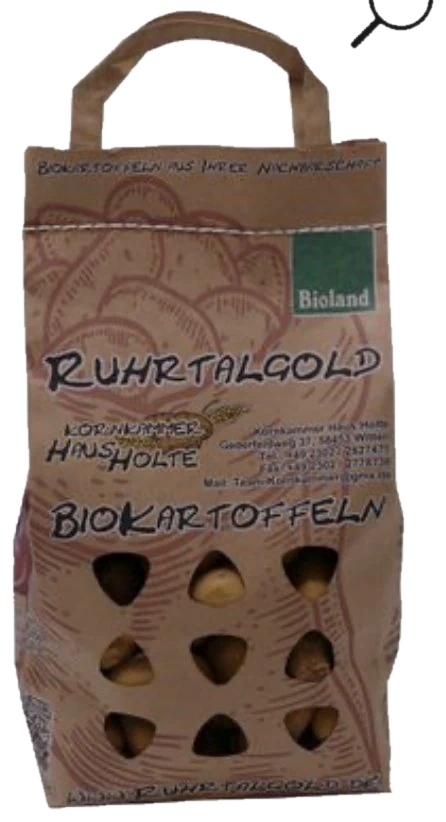
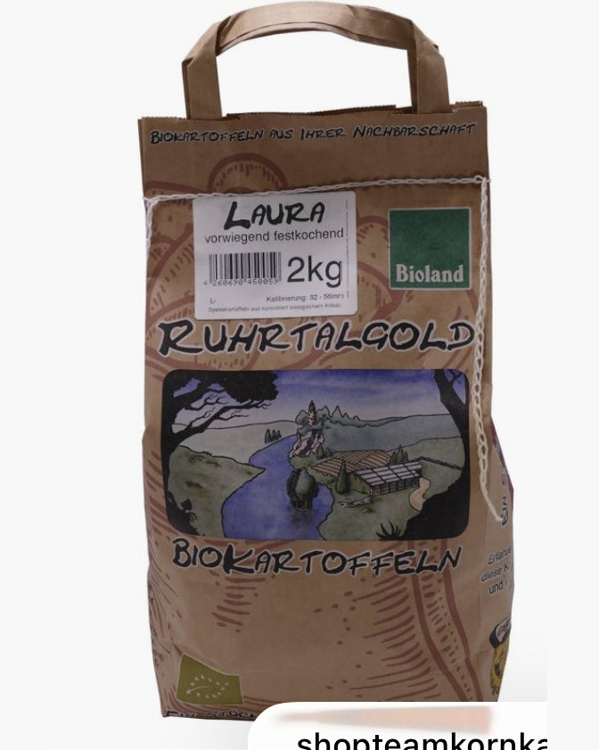

Die Details
SorteKartoffeln Karelia
Mehlig
GebindeBeutel 2 kg
5,29 € (2,64 €/kg)
HerkunftEigene Flächen, Bioland seit 1987
Flächen der Saison 2025/2026 in Dortmund-Barop und Dortmund-Mengede.
EignungPüree, Klöße und Suppen
Zerfällt beim Kochen, Stärkegehalt etwa 16,5 Prozent.
EAN4260690450042
Marke Ruhrtalgold, Kornkammer Haus Holte
Kartoffeln
Kartoffeln Karelia
Mehlig
5,29 €2,64 €/kg
Für dieses Gebinde nennen wir Ihnen den Preis auf Anfrage: Kontakt.
Mehligkochende Bio-Kartoffel. Mehlige Sorten zerfallen beim Kochen schnell, der Stärkegehalt liegt bei etwa 16,5 Prozent: die Sorte für Püree, Klöße und Suppen.
Dazu passt
Mehr Kartoffeln


